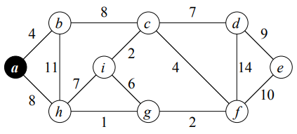

Aquí se encuentran algoritmos que crean arboles generadores de peso mínimo, por su nombre en ingles "Minimum spanning tree".
Este algoritmo funciona de forma muy similar al de dijkstra pero con la propiedad de conservar conexidad.
El algoritmo funciona de forma casi identica a Dijkstra. Tiene tiempo de ejecución: \( O((n+m) \lg n) \).
Código de (Cormen, 2001).
Thomas H. Cormen, C. (2001). Introduction to algorithms (p. 634). The MIT Press.
Realizada en Javascript.
Entrada:Recibe la gráfica en forma de lista de adyacencia, punto y coma ";" separa el nodo con los adyacentes, coma sencilla "," separa el eje con el peso, mientras que enter (o nueva linea) separa cada nodo en la lista.Nota: Ingrese el primer nodo como la raíz. Evite espacios, o caracteres extra, ya que pueden ser leidos como otros nodos o conexiones.
La imagen muestra el ejemplo que viene predeterminado.

\( G \) =
La gráfica ya procesada se observa en consola (por tener referencias circulares no se puede ver aqui, eso ocupa otro procesamiento), los caminos de regreso son marcados por la propieda .pi de cada nodo, puede comparar el caso mostrado con la solucion en Cormen p.635 .
Y tiempo de ejecución de MST-PRIM, de construir la gráfica y de todo el wrapper.
\( Respuesta \; \)